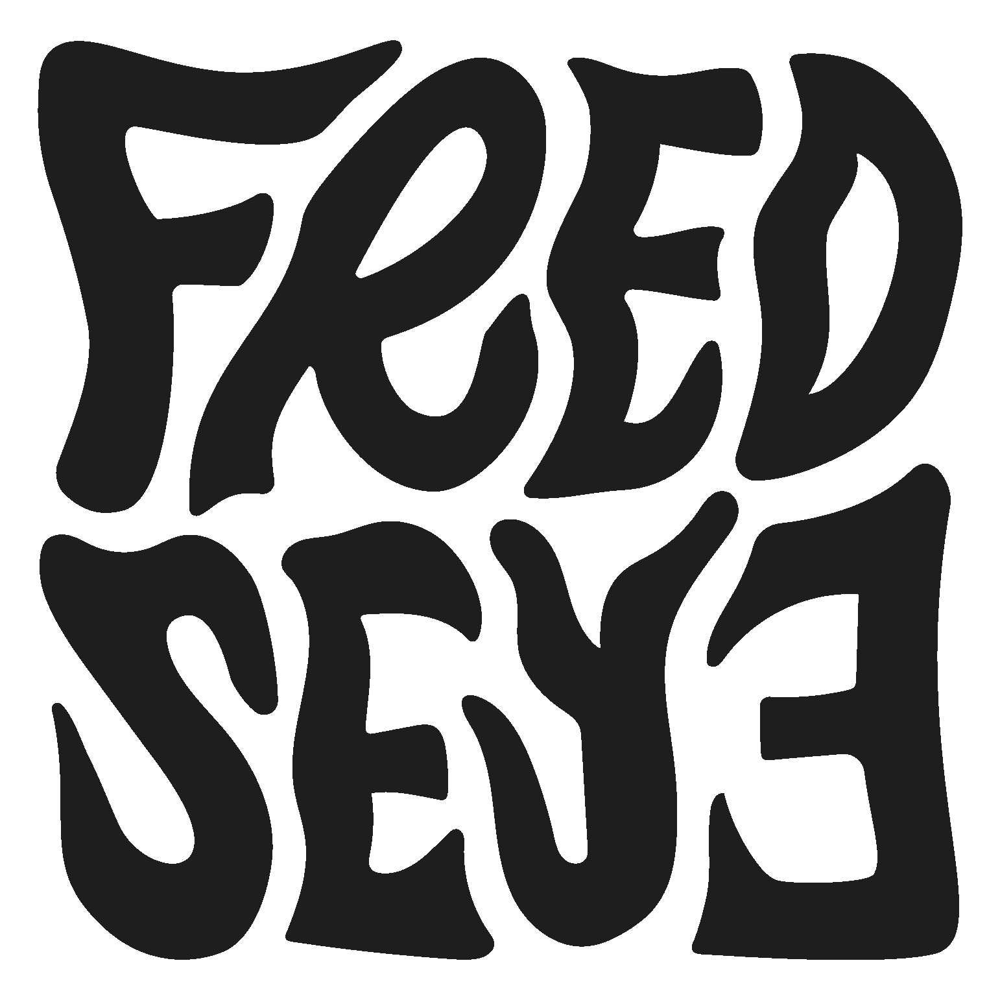
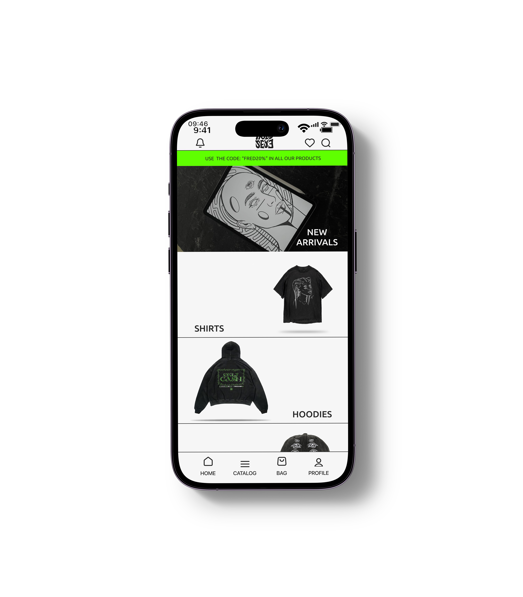

¿Que hacemos en Concipere?
¿Que hacemos en Concipere?
¿Que hacemos en Concipere?
Ofrecemos apoyo conceptual, potenciar conceptualmente proyectos y colaborar con quienes pretendan ser autosuficientes en la creación de contenido.
- Conceptualización y estrategias de diseño.
- Diseño UX/UI
- Identidad visual
- Soporte para emprendimientos
FAVORITOS
SEIS MONTES ANÁLISIS

TITULO: SEIS MONTES
OBJETIVO: Análisis de situación actual de Seis Montes.
15/08/2023DESCRIPCIÓN: Se investiga su posición en el mercado, productos y estatus digital con el fin de crear una base para la estrategia de marketing.
Créditos: Francisco Avellanal / Martin Bernardi
Ver Proyecto en Behance


SEIS MONTES ESTRATEGIA
TITULO: SEIS MONTES
OBJETIVO: Desarrollar una estrategia de marketing digital efectiva para Seis Montes.
15/12/2023DESCRIPCIÓN: Utilizando los datos recolectados, y el análisis realizado en una primer instancia, se creo una estrategia para local de café Seis Montes.
Créditos: Francisco Avellanal / Martin Bernardi
Ver Proyecto en Behance


FREDSEYE

TITULO: FREDSEYE
OBJETIVO: Diseño de prototipo de pagina e-commerce para desktop y mobile.
FECHA: 01/05/2023
DESCRIPCIÓN: A través de Figma, se creó un prototipo de página e-commerce, logrando hacer un diseño que resuma la identidad de la empresa y su producto. Adicionalmente se crearon mockups para el prototipo con Adobe Illustrator y Photoshop.
Créditos: Francisco Avellanal / "FREDSEYE" Florencia Silva, diseñadora y emprendedora
Ver Proyecto en Behance


CAFÉ RITUAL

TITULO: CAFÉ RITUAL
OBJETIVO: Crear una pagina web desde cero, utilizando HTML y CSS.
FECHA: 11/02/2022
DESCRIPCIÓN:
Utilizando HTML y CSS, se creo una pagina web de cafetería.
Se logra crear la identidad de la cafetería, y crear un menú
de ecommerce.
Se creo un diseño responsive y se sube al hosting de
webhost.com
Créditos: Francisco Avellanal
Ver Proyecto en Behance


INSTAGRAM
CONCIPERE.UY
TEL: +598 92 686 949
URUGUAY
MONTEVIDEO
URUGUAY
CONCIPERE@GMAIL.COM

¿INTERESADO EN TRABAJAR CONMIGO?